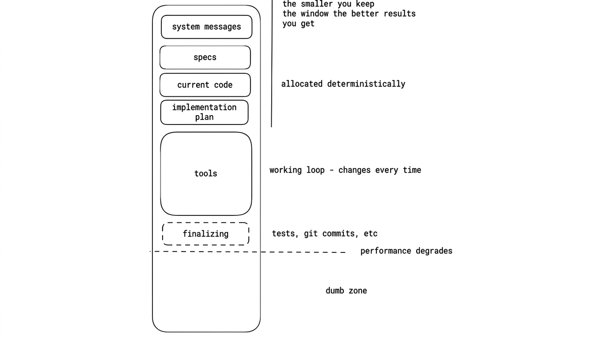

🚀 Work 1:1 with a Software Engineer and let AI handle the busywork → https://www.skool.com/ai-academy-with-robby-6849/about
Think of your context window as an array.
Your LLM doesn't have "real" memory. Every time you prompt it, this entire array gets sent to the model. Inside it, you might have:
- System message
- Project specs
- Current code
- Implementation plan
- Conversation history

The LLM essentially has a sliding window over this array. As the array fills up, the window moves forward — and older context gets pushed out.
Stay out of the "Dumb Zone"
There's a dotted line (metaphorically speaking). Once your context window crosses it, you're in the Dumb Zone.
At this point, the model starts hallucinating, forgetting earlier instructions, and confusing details. If your session crosses that line, start a new session. Don't try to push through — it won't get better.
The Real Problem: Multiple Objectives
When you assign one objective to the LLM, your array holds:
Specs → Code → Plan
That's fine. Manageable.
But when you assign another objective in the same session, you're now holding:
(Specs → Code → Plan) × 2
Now the context window balloons. It gets too big for the sliding window, and compaction kicks in.
Compaction is Lossy
Compaction tries to compress your context to free up space, but it's extremely lossy and non-deterministic. Important information will get lost in the process.
The Rule
Keep your context window as lean as possible. Keep your sliding window as small as possible. One objective per session. That's the game.
Source: Ralph Wiggum (and why Claude Code's implementation isn't it) with Geoffrey Huntley and Dexter Horthy